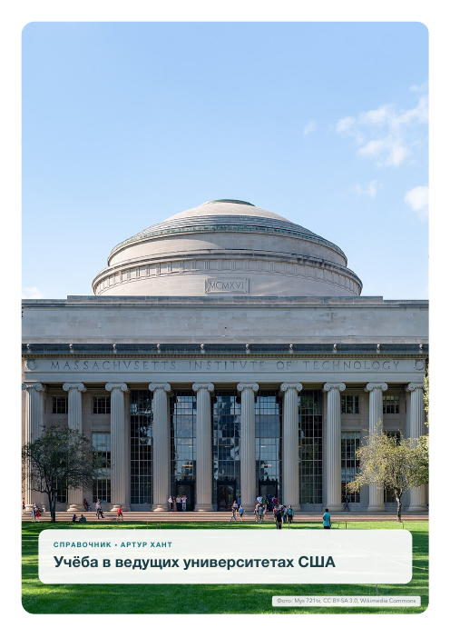
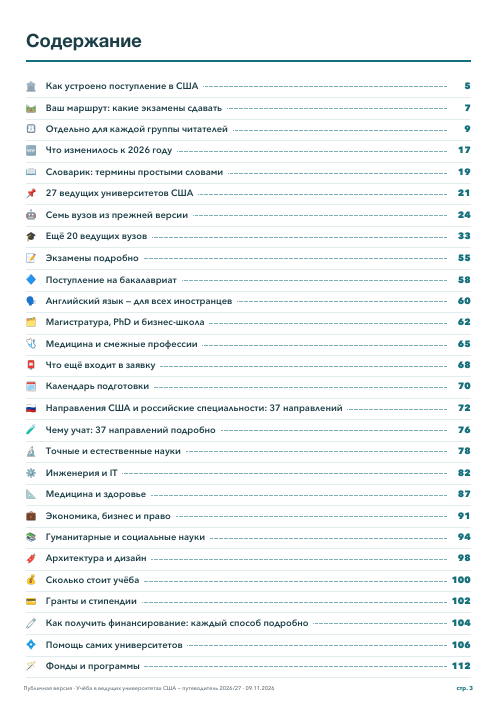
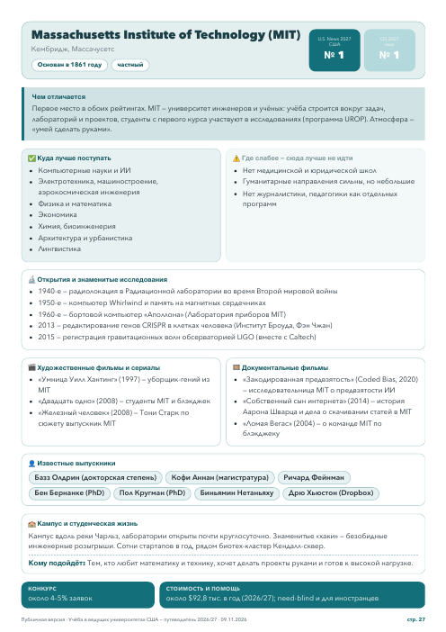
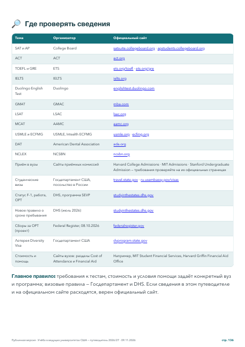

🔎 Нашёл
✅ Проверил
📄 Оформил
⚙️ Внедрил
$92 760
столько стоит год учёбы в MIT
Но если доход семьи до $200 тыс. в год — за обучение платить не нужно
🔎 Нашёл
✅ Проверил
📄 Оформил
⚙️ Внедрил
Не пересказ из блога, а первоисточник
Цена года и помощь семьям
sfs.mit.edu
Бесплатно при доходе до $100 тыс.
college.harvard.edu
Визы для студентов
travel.state.gov
Каждая цифра со ссылкой и датой проверки: 9 ноября 2026
🔎 Нашёл
✅ Проверил
📄 Оформил
⚙️ Внедрил
Десятки вкладок браузера — один PDF
137
страниц
27
вузов
37
направлений

Обложка

Содержание

Страница вуза

Источники
🔎 Нашёл
✅ Проверил
📄 Оформил
⚙️ Внедрил
Бесплатный справочник работает как моё резюме
1
Лежит на моём сайте вместе с услугами
2
Приводит людей, которым нужна такая работа
3
Показывает, что я сделаю для вас
↻ Посмотреть ещё раз